This document covers the Docker containerization setup for the signals trading platform. The Docker configuration packages the built application artifacts into a deployable container image for production environments.
For information about the build process that creates the artifacts used by Docker, see Build Process.
The signals platform uses a single Docker container that packages the entire application stack, including both the backend API server and frontend static assets.

The container configuration is defined in the root Dockerfile which implements a multi-stage approach optimized for production deployment.
The container uses the official Node.js 22 Alpine Linux image as its base runtime:
| Configuration | Value | Purpose |
|---|---|---|
| Base Image | node:22-alpine |
Lightweight Node.js runtime |
| Working Directory | /app |
Application root directory |
| Additional Tools | curl |
Health check and debugging utility |
The container copies specific directories from the build context:

The .dockerignore file ensures only production-ready artifacts are included in the Docker build context:
| Excluded Directory | Reason |
|---|---|
src |
Source code (already compiled to build/) |
test |
Test files not needed in production |
scripts |
Build scripts not needed at runtime |
apps |
Frontend source code (already built to build/) |
tools |
Development utilities |
docs |
Documentation files |
docker |
Docker-related files |
config |
Build configuration files |
This exclusion strategy minimizes the Docker build context size and ensures no development artifacts leak into production containers.
The Docker deployment process involves building the image and publishing it to a container registry.

The platform provides publishing scripts for different operating systems:
Windows Publishing (scripts/win/publish.bat:1-3):
tripolskypetr/signal-appLinux Publishing (scripts/linux/publish.sh:1-3):
Both scripts use the same Docker image tag and registry destination, ensuring consistent deployment across platforms.
The container starts the application using the Node.js runtime with the compiled backend bundle:
CMD ["node", "./build/index.mjs"]
This command launches the main application entry point, which includes:
The container includes curl utility installation for health check capabilities:

The Docker configuration integrates seamlessly with the build system documented in Build Process:
copy-build.ts script consolidates all application artifacts into the build/ directoryThis separation ensures that Docker containers contain only production-ready, optimized code without any development dependencies or source files.